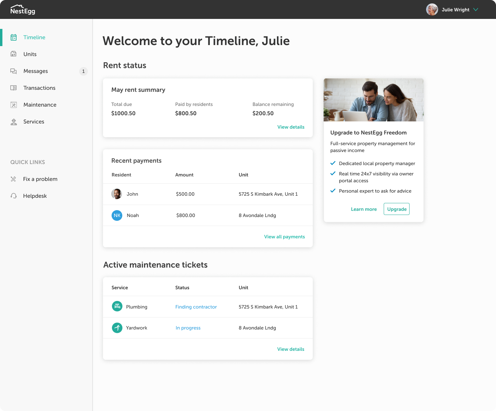

Timeline Redesign
Problem statement: Our timeline / landing page isn't useful to our users.

SPRINT 1: investigation and research
Usability issues:
The Timeline was supposed to be the one-stop shop for users to check the status of their properties: Rent-collection status, Maintenance requests, and important notifications. However, analytics revealed that users were completely ignoring the timeline. Our research uncovered the following problems:
OBSERVATION 1: Too much content
We realized that notifications could quickly pile up, making the timeline overwhelming and unusable - especially if the landlord's portfolio included multiple properties.

OBSERVATION 2: Users' priority is to check rent collection status
Our user research showed that the number one use case for users was to check their rent collection status. The Timeline was supposed to provide users with that information, but because the Timeline was cluttered and confusing, users were going to the Transactions page to check their rent status. (This was further verified by our study of our heatmaps - 'Transactions' was the most clicked nav item). However, our Transactions page did not provide an at-a-glance view of the user's rent status. Users were manually adding together line items to figure out their rent collection status.How can we provide a better rent experience to our users?
SPRINT 2: CONCept development and prototyping
We identified crucial changes that we wanted to make and wireframed redesigns, which we honed with internal testing and feedback sessions with stakeholders and the product team.
SPRINT 3: USER TESTING & ITERATION
After clarifying our direction, we created hi-fidelity mockups and conducted user research sessions to affirm that our changes would be beneficial to the User Experience. We settled on a new dashboard design that would tackle some of the key issues.
Summary of changes
New dashboard
The New dashboard just displays the crucial information users need. A rent summary module provides an at-a-glance view of the users portfolio. To cut down on clutter, notifications are bucketed by category.
New rent view
For a more granular view of rent collection status, users can click the new Rent and Fees page. By default, the page is filtered to show 'Outstanding balances' by property, since that is they key concern for most users.
 New rent view, w/ 2 properties
New rent view, w/ 2 properties
Selecting a unit (e.g. '8 Avondale Lndg') in the table of outstanding balances opens a page which shows the rent collection status by resident:
The transactions page also got a makeover to make it more easily scannable.
SPRINT 4: development & conclusion
Once we were ready, we passed off our designs to the engineering team for development.
Were we successful? Studying user behavior after we rolled out changes confirmed for me that this project was a success. Negative customer feedback pertaining to the timeline decreased drastically. Customers actively began using the new Rent view page. We felt confident that we had improved our product in a way that had vastly improved the fundamental experience for our users.